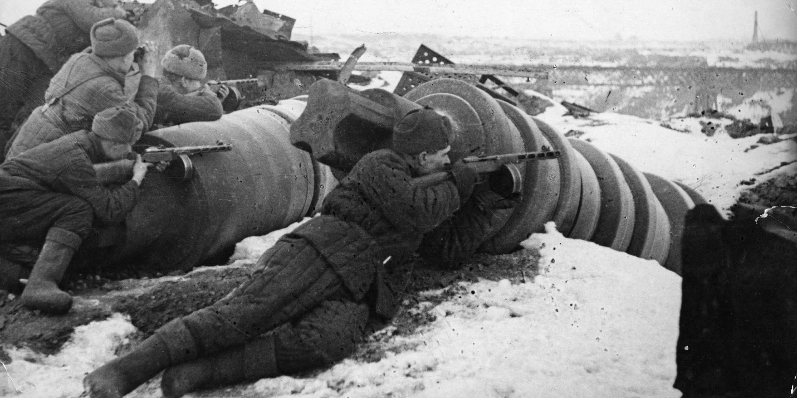

The Battle of Stalingrad: Turning Point on the Eastern Front
Fought from late summer 1942 to early February 1943, the Battle of Stalingrad was one of the longest, costliest, and most consequential engagements of World War II, halting the German advance into southern Russia and shifting strategic momentum on the Eastern Front.
Summer 1942 Offensive and the Push to the Volga

Following heavy fighting in 1941 and spring 1942, German forces launched Case Blue in summer 1942 with the aim of securing oil fields in the Caucasus while protecting the northern flank toward the Volga River and Stalingrad.
Stalingrad served as both an industrial center producing tractors, weapons, and transport equipment and a key corridor along the Volga River connecting southern Russia with central and northern regions.
Axis forces involved in the campaign included the German Sixth Army under General Friedrich Paulus alongside Romanian, Italian, and Hungarian formations tasked with holding long stretches of flank terrain.
Soviet defenders—initially organized under the Stalingrad Front and reinforced by successive reserves—worked to delay German advances across the steppe and hold river crossings as fighting neared the city.
Urban Combat in the Ruins and Operation Uranus

By August and September 1942, Luftwaffe bombing and advancing German ground units turned large sections of Stalingrad into smoking rubble, yet fierce fighting continued block by block, factory by factory, and floor by floor.
Close-quarters combat in ruined apartment blocks, grain elevators, rail stations, and industrial complexes—such as the Tractor Factory, Barrikady, and Red October—reduced the advantage of massed armor and required tight infantry, sniper, engineer, and artillery coordination.
Soviet troops crossed the Volga under artillery fire and aerial interdiction to reinforce depleted bridgeheads, enduring severe casualties, shortages, and freezing conditions as autumn gave way to winter.
While German attention remained heavily fixed on the city itself, Soviet planners prepared a wide counteroffensive—Operation Uranus—targeting overextended Axis flanks held by less heavily armored allied divisions.
Encirclement, Winter Attrition, and Strategic Aftermath

Launched on November 19, 1942, Soviet pincers from north and south broke through flanking lines and met near Kalach within days, trapping hundreds of thousands of Axis soldiers inside the Stalingrad pocket.
Attempts to relieve the encircled Sixth Army failed, while aerial resupply fell far short of daily fuel, food, and ammunition needs amid harsh winter weather and strong Soviet air and anti-aircraft opposition.
Inside the pocket, dwindling rations, frostbite, disease, and relentless pressure gradually wore down organized resistance until remaining German forces surrendered in late January and early February 1943.
Stalingrad inflicted massive losses on Germany and its allies and marked a decisive strategic reversal on the Eastern Front, paving the way for major Soviet offensives such as Kursk and rolling back Axis advances across eastern Europe.
After the heavy battles of 1941 and the spring campaigns of 1942, German strategic planning shifted toward southern Russia with the twin goals of seizing oil resources in the Caucasus and anchoring a defensive line along the Don and Volga rivers. Control of Stalingrad promised to shield the northern flank of advancing forces and cut an important waterway used to move fuel, grain, and troops.
The terrain around the city presented distinct challenges for mobile warfare. Open steppe stretched across much of the approach, yet ravines, railway embankments, industrial districts, and the wide Volga River divided the battlefield into distinct sectors that required careful coordination between infantry, armor, engineers, and artillery.
Soviet defensive doctrine emphasized stubborn holding actions, layered strongpoints, and rapid local counterattacks to slow German momentum. Rather than yielding ground quickly, defending units fortified basements, ruined walls, and industrial structures to force attackers into costly close-quarters engagements.
Inside Stalingrad, intense street fighting changed the rhythm of battle from maneuver warfare to attrition. Soldiers fought across shattered courtyards, stairwells, and factory floors where visibility was short, debris blocked tanks, and small teams using grenades, submachine guns, rifles, and mortar fire contested every yard of ground.
Artillery and air power played central roles throughout the autumn fighting. German aircraft and heavy guns bombarded defensive positions and river crossings, while Soviet batteries positioned on the eastern bank of the Volga fired across the water to support beleaguered districts and disrupt German assembly areas.
Crossing the Volga under fire remained one of the most hazardous tasks of the campaign. Reinforcements, ammunition, medical supplies, and rations arrived largely by boat and ferry at night or under smoke and artillery cover, while wounded soldiers moved back across the river amid constant risk from shellfire and aircraft.
While much public and command attention centered on the ruined city, Soviet planners worked secretly to build up forces for a wide counteroffensive. Troops, armor, and artillery moved into staging areas along the Don and Volga flanks, taking advantage of winter weather, camouflage, and deception to mask the scale of the coming blow.
When Operation Uranus began in mid-November 1942, Soviet armored and mechanized formations struck sectors held by overextended Axis flanks. Rapid breakthroughs and sweeping pincer movements converged behind the German forces in and around Stalingrad, cutting overland supply lines and trapping a large force inside the encirclement.
Once encircled, the German Sixth Army and attached units faced mounting operational strain. Attempts to fight outward or break through from the outside stalled against Soviet defensive lines and winter conditions, while air transport could not deliver enough fuel, food, and ammunition to sustain full combat operations.
Winter weather compounded every hardship for trapped and advancing forces alike. Sub-zero temperatures, snow, and icy winds strained engines, weapons, and supply vehicles, while shortages of warm clothing, medical care, and calories took a heavy toll on soldiers in trenches and ruined buildings.
As weeks passed inside the pocket, ammunition grew scarce and organized resistance gradually broke down into isolated pockets. By late January and early February 1943, remaining German formations surrendered, ending one of the deadliest battles in human history.
The strategic impact of Stalingrad was immediate and lasting. Germany lost an entire field army along with substantial equipment and allied formations, while the Soviet Union gained confidence, operational momentum, and strategic initiative that shaped the rest of the war on the Eastern Front.
Logistics along the southern steppe required steady rail and road movement to feed thousands of vehicles, artillery batteries, and infantry units, and stretched supply lines became increasingly vulnerable as winter set in across the region.
Inside the ruined city, small-unit leadership often shaped local outcomes when smoke, rubble, and noise severed normal communications between headquarters and front-line squads holding basements, factories, and river embankments.
When the fighting ended in early February 1943, the scale of human and material loss left a deep mark on both sides, while shifting strategic initiative decisively toward Soviet forces on the Eastern Front.
Transport corridors along the lower Volga and Don faced constant pressure from winter conditions, damaged tracks, and shifting front lines as both sides tried to move men and supplies where they were needed most.
By the time organized resistance ended in early February 1943, Stalingrad had become a lasting symbol of endurance and turning-point warfare in Europe.
Field hospitals, repair depots, and supply columns worked under relentless strain as winter deepened across the steppe, while the outcome at Stalingrad reshaped Axis strategy and signaled a decisive shift in the war across eastern Europe.
Harsh winter weather, stretched supply routes, and relentless urban combat defined the campaign to its bitter end in early 1943.
Surviving troops and civilians faced grueling winter conditions until the last pockets of resistance gave way in early February 1943.
Heavy losses on the Volga marked a lasting turning point across the Eastern Front.